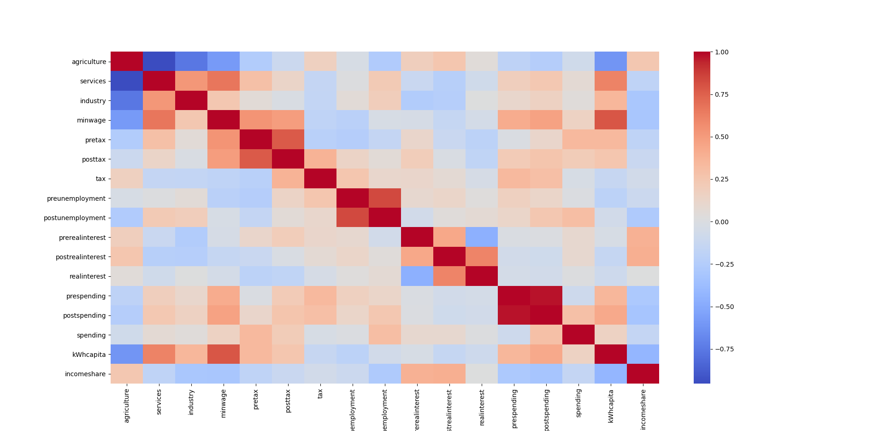
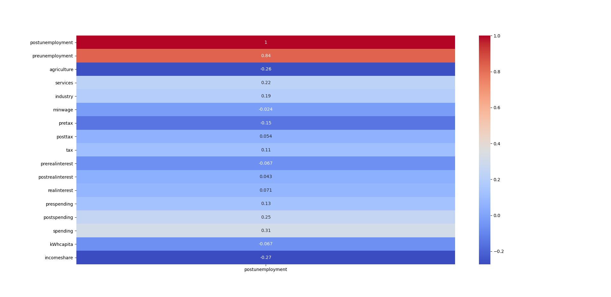

Introduction to Economic Theory
According to Keynsian Economics, there are three main ways a government can stabilize an economy during a recession. One way is to decrease interest rates. This allows easier borrowing for businesses and therefore creates more jobs. The second way a government can increase jobs is by decreasing taxes. This is based on the same idea that additional money in the hands of citizens will allow for more businesses to stay open. The third main way a government can stabilize a recession is by increasing spending to again put more money in the hands of citezens.

We can notice a couple of basic correlations on the prelininary heatmap. For example, we can see that obviously the more farming an economy has, the less service employees the country has. Then we will start to notice other things like the higher the minimum wage, the more energy costs. We can see that the interest, taxes, and unemployment before the recession are corrolated to those variables during the recession. The corrolations to unemployment are:

Collecting Data
Data was difficult to collect due o the fact that all nations have varying levels of data collection and are rarely consistant with other nations. We were initially going to hone in on the European Union, but their data collection wasn't as good as we had anticipated and didn't start being widely collected until after 2008. We then transitioned to finding data for the entire world. All of our data ended up coming from the world bank except for minimum wage which came from the International Labor Organization. For x-xariables, we use data that was available in 2007 for prediction purposes, but we use the change between 2010 and 2007 to identify best practices for governments after a recession has hit. The y-axis is unemployment from 2010. If you prefer to not use the automatic generator, push a branch named You can @mention a GitHub username to generate a link to their profile. The resulting Having trouble with Pages? Check out our documentation or contact support and we’ll help you sort it out.
agriculture:%labor force ag
services:%labor serve
industry:%labor ind
minwage:minimum wage annaully by county in USD
pretax:The highest marginal tax rate in 2007
posttax:The highest marginal tax rate in 2010
tax:The difference in taxes between 2010 and 2007 (posttax - pretax)
preunemployment:Unemployment in 2007
postunemployment: Unemployment in 2010
prerealinterest:real interest rate in 2007
postrealinterest:real interest rate in 2010
postspending:government expenditures per capita as of 2010
Creating pages manually
gh-pages to your repository to create a page manually. In addition to supporting regular HTML content, GitHub Pages support Jekyll, a simple, blog aware static site generator. Jekyll makes it easy to create site-wide headers and footers without having to copy them across every page. It also offers intelligent blog support and other advanced templating features.
Authors and Contributors
<a> element will link to the contributor’s GitHub Profile. For example: In 2007, Chris Wanstrath (@defunkt), PJ Hyett (@pjhyett), and Tom Preston-Werner (@mojombo) founded GitHub.
Support or Contact